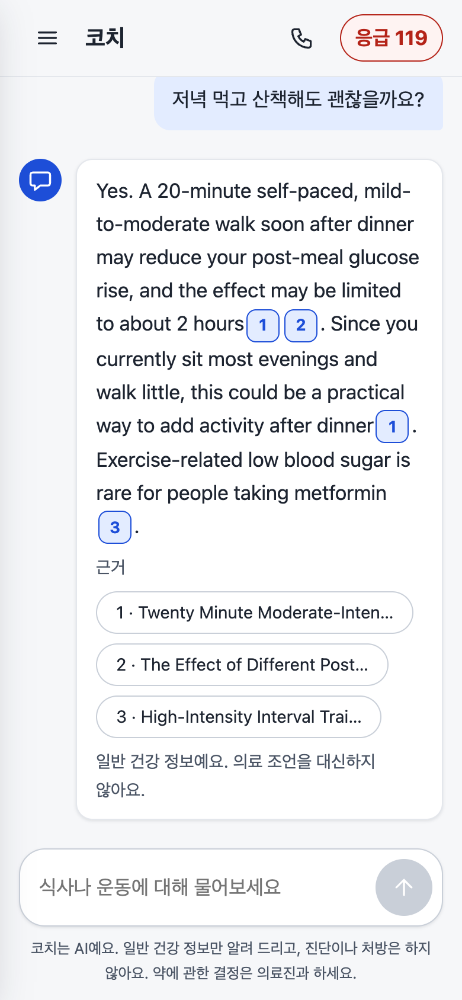
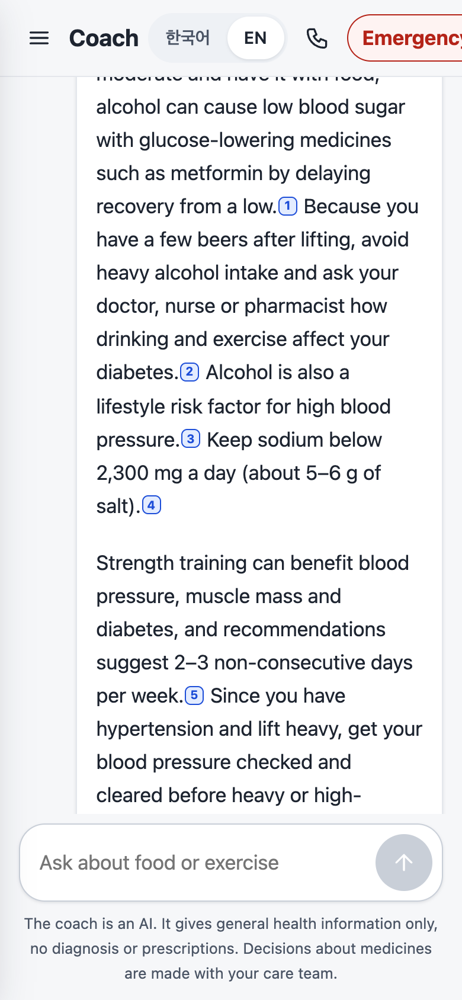
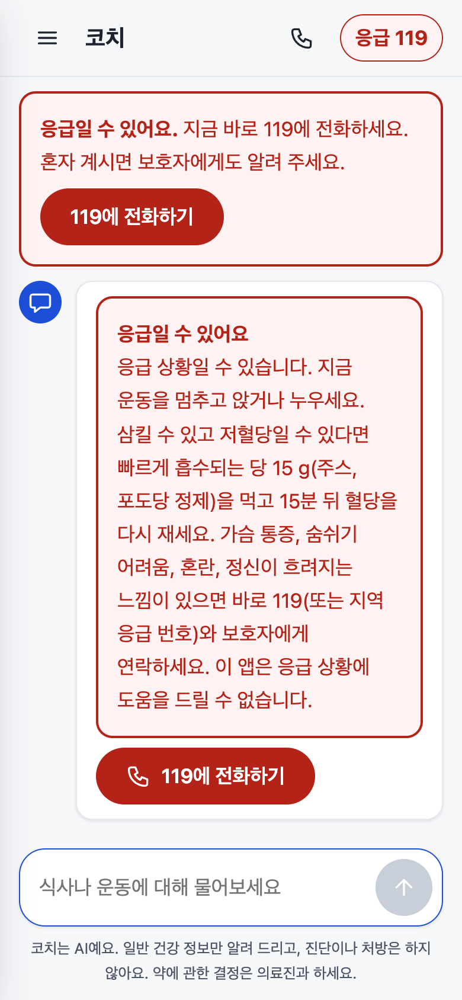
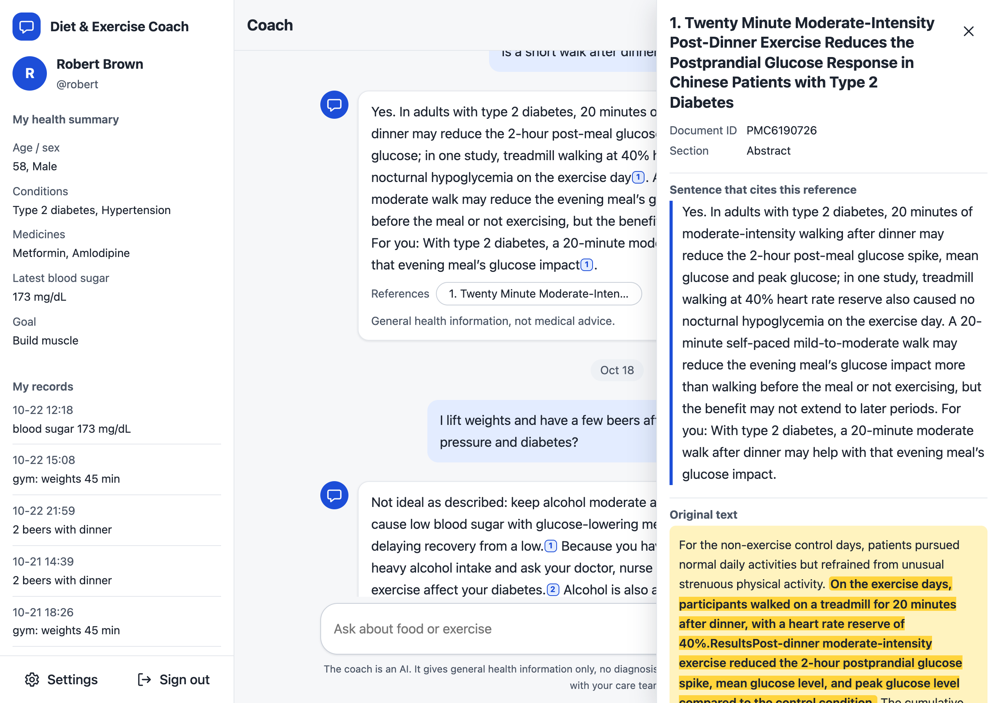

Multi-Agent Agentic RAG:
근거로 답하는 건강 코칭
“식단, 운동, 내 질환까지 한 번에 물어보세요. 의학 논문을 근거로 답합니다.”
제2형 당뇨병이 있는 고령자를 위한 건강 코칭 챗봇입니다. LangGraph Supervisor가 식단과 운동 질문, 건강 기록 요청, 안전 관련 요청을 유형에 맞는 경로로 전달합니다. Multi-Agent Workflow, Agentic RAG와 평가를 설계했습니다. 200문항 Benchmark에서 181문항(90.5%)을 통과해 Single-Agent의 165문항(82.5%)보다 16문항 높았습니다.







Call 119 now and tell your guardian.
Call 119Stop exercising now and sit or lie down. If you can swallow and this could be low blood sugar, take 15 g of fast-acting sugar and recheck in 15 minutes.
If you have chest pain, trouble breathing, confusion, or feel faint, call 119 (or your local emergency number) and your guardian right away. This app cannot help in an emergency.
Call 119고령 당뇨 환자에게는 근거와 개인화가 모두 필요했습니다.
사용자가 건강정보를 입력하고 질문하면, 의학 논문과 개인 건강정보를 함께 검토해 맞춤형 코칭을 제공합니다.
기존 구조에서는 논문 근거를 활용하면서 다양한 요청을 구분해 처리하기 어려웠습니다.
- Standard RAG의 한계
- Agentic RAG + Single-Agent의 한계
Standard RAG의 한계
이 프로젝트의 Standard RAG에서는 필요한 근거를 검색하지 못하는 경우가 있었고, 근거가 부족한 상태에서도 LLM이 그럴듯한 답변을 생성했습니다. 이를 개선하기 위해 답변의 근거를 확보하고 검증하는 구조가 필요했습니다.
Agentic RAG + Single-Agent의 한계
Single-Agent는 식단과 운동이 결합된 복합 건강 질문과 기록 조회, 잡담, 응급 상황, 약 변경, 상담 연결, 개인정보 요청 등 다양한 메시지를 유형에 맞게 처리하는 데 한계가 있었습니다.
개인화된 복합 건강 질문에의학 논문과 개인 건강정보를 함께 반영해정확하고 신뢰할 수 있는 답변을제공하려면 어떻게 해야 할까?
복합적인 건강 질문을 처리하고 필요한 근거를 충분히 확보하기 위해 Multi-Agent와 Agentic RAG를 선택했습니다.
Multi-Agent
하나의 건강 질문에 식단, 운동, 안전성 등 여러 영역이 포함될 수 있으므로, 영역별 전문 Agent를 구성하고 필요한 Tool을 활용하여 각 작업을 병렬로 수행한 뒤 결과를 통합하기 위해 선택했습니다.
Agentic RAG
복합 건강 질문에 필요한 의학적 근거가 여러 논문에 분산되어 있으므로, LLM이 질문과 사용자의 건강 상태를 분석하여 검색 질의를 동적으로 생성하고, 필요한 근거를 판단하고 선별할 수 있도록 Agentic RAG를 선택했습니다.

근거(chunk) 확인 화면개인화된 건강 코칭 시스템을 구현했습니다.
- Personalization
- Agentic RAG
- Multi-Agent orchestration
Personalization
Supervisor가 질문을 개인화 질문과 일반 건강 질문으로 구분합니다. 개인화 질문에는 기저질환, 복용 약물 등 사용자 건강 정보를 근거 검색과 답변 생성에 반영합니다. 일반 질문에서는 불필요한 개인화 검색을 제한하되, 안전성 검사는 두 유형 모두 사용자의 건강 상태를 기준으로 수행합니다.
Agentic RAG
Standard RAG는 원본 질문으로 근거를 검색하고 답변을 생성합니다. Agentic RAG는 검색과 검증을 여러 단계로 나눕니다.
- Query Transformation: 핵심 용어, Step-back Query, 질환 및 약물별 조건, 정보 단위 분해
- Hybrid Retrieval: Dense Retrieval과 BM25의 검색 결과를 RRF로 통합
- Evidence Selection: 검색 질의별 핵심 근거 선택 및 근거 메모 생성
- Verification: 근거 메모를 원문과 대조하여 검증 기준 미충족 내용 제거
- Grounded Generation: 출처를 포함해 답변 생성, 근거 부족 시 답변 유보
Multi-Agent orchestration
비교용 Single-Agent는 식단과 운동을 하나의 Agentic RAG Pipeline에서 처리합니다. Multi-Agent는 LangGraph 기반 Supervisor-Worker Architecture로 요청에 맞는 경로를 구성합니다.
- Supervisor Routing: 요청 유형과 필요한 Agent를 결정
- Agent Specialization: Diet, Exercise, Safety, Records, Writer로 역할 분리
- Parallel Execution: 복합 질문은 Diet, Exercise Subgraph와 코드 기반 Safety Agent를 병렬 실행
- State Management: Shared State에 실행 결과를 저장하고 Writer에서 통합
- Conditional Routing: 기록 조회, 응급, 약물 변경 등은 별도 경로에서 처리
구성 요소를 단계적으로 추가하며 4가지 RAG 및 Agent 아키텍처를 비교했습니다.
Figure 2. Standard RAG에서 Multi-Agent까지 구성 요소를 단계적으로 추가한 4가지 아키텍처 비교.
Supervisor 1개와 전문 Agent 5개로 구성했습니다.
LangGraph 기반으로 세 계층을 구성했습니다. Orchestration에서는 Supervisor가 요청 경로를 결정하고, 5개 전문 Agent가 역할을 분담합니다. Agentic RAG에서는 Diet와 Exercise Agent가 각각의 subgraph에서 병렬 실행된 후 결과를 Shared CoachState에 통합합니다. Safety 계층의 Emergency Guard, Safety Agent, Validate는 LLM 대신 코드 규칙으로 구현했습니다.
Figure 1. 최종 Multi-Agent Agentic RAG의 LangGraph 노드 구성.
같은 조건에서 4가지 구조(Agent/RAG)를 비교했습니다.
동일한 모델로 4가지 아키텍처를 비교했습니다. 200문항 Benchmark에서 Multi-Agent의 통과율은 다른 아키텍처보다 8.0~8.5%p 높았고, 평균 응답 시간은 Agentic 계열 중 가장 짧았습니다(8.6초).
200문항 Benchmark최종 결과
식단 논문 15편과 가상 사용자 10명으로 만든 별도 200문항에서 통과한 비율입니다.
측정 방법 문항마다 기대하는 답변 항목(예: 논문 속 수치, 본인 건강 상태 반영)이 답변에 들어 있는지 정규식과 코드 규칙으로 확인합니다.
Multi-Agent는 Single-Agent보다 16문항을 더 통과했습니다(181 vs 165). 이 중 11문항은 기록 조회 질문으로, Records Agent가 사용자 기록을 직접 조회해 답변한 결과입니다. 200문항 Benchmark 기준 평균 응답 시간은 Agentic 계열 중 가장 짧았습니다(8.6초). 어떤 설계 요소가 이 차이를 만들었는지는 별도로 검증하지 않았습니다.
Agentic RAG의 주요 개선점은 근거 검색 성능입니다. 200문항 통과율은 Standard RAG와 비슷했지만(82.0%), 100개 메시지 평가에서는 근거 회수율이 31.6%에서 58.2%로 상승했습니다. 즉, 답변에 필요한 논문 근거를 더 많이 검색했습니다.
평가 결과 5개 더 보기답변 품질, 근거 회수율, 안전한 답변, 식단 및 운동 코칭 외 메시지 처리, 응답 시간눌러서 펼치기
같은 논문 86편, 같은 질문 100개, 같은 가상 사용자 10명, 같은 모델로 비교했습니다. 답변 품질과 식단 및 운동 코칭 외 메시지 처리는 LLM-as-a-Judge로 채점했고, 근거 회수율과 안전 점검은 코드 규칙으로 확인했습니다.
답변 품질
건강 질문 60개에는 정답에 꼭 들어가야 할 핵심 내용(예: "저녁 식후 20분 걷기가 식후 혈당 상승을 줄인다")이 모두 97개 정해져 있습니다. 각 시스템의 답변이 이를 얼마나 충실히 담았는지 비교했습니다.
측정 방법 LLM-as-a-Judge: LLM이 답변을 읽고 필수 항목마다 1 / 0.75 / 0.5 / 0.25 / 0점을 매겼습니다. 점수 합계를 97로 나눈 값입니다.
이번 비교에서는 retrieval 개선만으로 답변 품질 점수가 높아지지 않았으며, Safety 규칙과 Agent 분리를 적용한 구조에서 점수가 상승했습니다.
근거 회수율
정답에 필요한 핵심 내용별로 해당 내용이 포함된 논문 원문 문장(chunk)을 미리 지정했습니다(총 98개). 이 문장들이 답변 생성 LLM에 전달된 retrieval 결과에 포함된 비율로 검색 성능을 평가했습니다. 답변 생성 품질과는 별도로 측정한 지표입니다.
측정 방법 정답 문장의 앞, 중간, 뒤에서 50자씩 뽑아, 전달된 검색 결과와 일치하면 회수로 판정했습니다(코드 규칙).
근거 회수율은 검색 질의 분해와 Hybrid Retrieval을 적용한 Agentic RAG 단계에서 약 2배로 상승했습니다. Multi-Agent에서도 비슷한 수준을 유지했으며, Agentic RAG 58.2%와 Multi-Agent 60.2%의 차이는 정답 근거 98개 중 2개입니다.
안전한 답변
건강 질문 60개의 답변 중 위험한 권고나 필수 경고 누락이 없었던 비율입니다.
측정 방법 코드 규칙 S1-S9가 답변을 검사합니다. 예를 들어 의료진 확인 없이 약 중단이나 용량 변경을 권하는지, 저혈당 위험 약을 먹는 사람의 운동 답변에 저혈당 경고가 빠지지 않았는지 봅니다.
Safety Agent가 없는 Standard RAG와 Agentic RAG에서는 전체 답변의 8~10%에서 인슐린 사용자를 위한 운동 안내에 필요한 저혈당 주의 문구가 누락됐습니다.
식단 및 운동 코칭 외 메시지 처리
기록 조회, 잡담, 응급, 약 변경, 상담 연결, 개인정보 요청 40개를 알맞은 방식으로 처리했는지 봤습니다.
측정 방법 유형별 성공 조건(예: 응급은 119 안내, 약 변경은 거절과 의료진 안내)을 정하고 LLM이 성공/실패를 판정했습니다(LLM-as-a-Judge).
가장 큰 차이는 식단 및 운동 코칭 외 메시지 처리에서 나타났습니다. 모든 메시지를 논문 검색으로 전달하는 구조에서는 기록 조회나 응급 상황 등 다양한 요청에 적절히 대응하기 어려웠습니다.
응답 시간
메시지 하나를 처음부터 끝까지 처리하는 데 걸린 평균 시간(초)입니다.
Figure 3. 4가지 구조의 6개 지표. 모든 값은 저장소의 평가 표(eval/results/metrics_tables.md, docs/BENCHMARK_200.md)에서 옮겼습니다.
Multi-Agent와 Agentic RAG를 결합하여 개인화된 근거 기반 건강 코칭 시스템을 구현했습니다.
기존 Standard RAG는 복합 건강 질문에 필요한 의학적 근거를 충분히 확보하기 어려웠으며, 비교용 Single-Agent는 다양한 요청 유형과 여러 영역이 결합된 질문을 처리하는 데 한계가 있었습니다.
이를 해결하기 위해 Agentic RAG로 개인의 건강 상태에 적합한 근거를 검색하고 검증하는 Pipeline을 구축했습니다. Multi-Agent Architecture로 요청 유형별 실행 경로를 분리하고 전문 Agent 간 작업 분담과 병렬 실행을 구현했습니다.
동일한 조건에서 4가지 Architecture를 비교한 결과, 최종 시스템은 답변 품질, 근거 회수율 및 건강 코칭 외 요청 처리율에서 가장 높은 성능을 달성했으며, Single-Agent와 함께 안전성 평가에서 모든 문항을 통과했습니다.
Standard RAG 대비 +16.2%p
Standard RAG 대비 +28.6%p
Single-Agent 대비 +62.5%p
Standard RAG 대비 +8.3%p
Single-Agent 대비 +8.0%p
Agentic 계열 중 가장 짧은 응답 시간
앞의 네 지표는 100개 메시지 평가, 뒤의 두 지표는 별도의 200문항 Benchmark 결과입니다. 건강 질문 60개만 비교한 경우 최종 시스템의 평균 응답 시간은 18.2초였으며, 안전성 결과는 평가 조건 내 코드 규칙 검증 결과입니다.
개인화, 근거 기반 답변 생성, 복합 요청 처리 및 안전성을 하나의 AI Agent 시스템으로 통합하고, 비교 실험을 통해 설계의 유효성을 검증했습니다.
이용자 앱에서 의료진 콘솔까지
이용자 앱 화면 4개와 의료진 콘솔 화면 5개를 순서대로 배치했습니다. 이미지를 누르면 확대할 수 있으며, 화면에는 가상 이용자의 데모 기록이 표시됩니다.
- 1. User login
- 2. Chat answer with evidence chips
- 3. Evidence panel
- 4. Emergency guidance
- 5. Care team login
- 6. Care overview
- 7. Care alerts
- 8. Care user list
- 9. Care user detail
가상 이용자 10명 중 한 명을 골라 바로 체험할 수 있습니다. 화면 언어는 한국어와 영어로 전환됩니다.
답변 문장 끝의 파란 번호와 아래 "References" 칩이 같은 번호로 연결되어, 어느 문장이 어느 논문에 근거하는지 보여 줍니다.
Reference 번호를 누르면 논문 제목, 검색된 chunk, 해당 근거를 인용한 답변 문장, 노란색으로 강조된 원문 문장을 확인할 수 있습니다. 이를 통해 답변과 논문 원문을 직접 비교할 수 있습니다.
응급 상황을 나타내는 표현이 입력되면 코드 규칙이 LLM보다 먼저 이를 감지해, 정해진 안내 문구와 119 연결 버튼을 표시합니다.
의료진은 이용자 앱과 분리된 별도 계정으로 로그인해 관리 화면(Care console)에 접속합니다.
질문이 어떤 경로(식단, 운동, 기록 등)로 처리됐는지, 알림 건수, 응답 시간, 비용을 한눈에 모니터링합니다.
응급 신호와 약 변경 요청이 의료진에게 전달됩니다. 알림 유형별로 모아 보고 확인 여부를 관리합니다.
이용자 목록에서 처리되지 않은 알림(unhandled)이 있는 이용자를 확인합니다.
이용자를 누르면 해당 이용자의 정보 화면이 나옵니다.
선택한 이용자의 건강 요약(질환, 복용 약, 최근 혈당), 입력한 기록, 알림 이력을 한 화면에서 확인합니다. 알림에는 유형(예: Medicine change), 답변 시간, 비용이 함께 표시됩니다.
세부 화면Details
화면 2의 파란 번호와 References 칩을 확대했습니다. 번호를 누르면 화면 3의 Evidence panel이 열립니다.
모바일 화면에서는 글자 크기 조정, 큰 터치 영역, 한국어/영어 전환을 지원합니다.
안전과 신뢰를 위한 장치
| Hallucination 방어 | 근거가 부족하면 답변을 보류합니다. 또한 메모를 검증하고, 위험 조언 규칙 S1-S9로 답변을 검사해 필요한 경우 재작성합니다. |
|---|---|
| 응급 대응과 실행 기록 | 응급 상황은 코드 규칙이 LLM보다 먼저 처리하고, 기록 삭제는 사람이 승인해야 하며, 모든 실행 기록(trace)을 저장합니다. |
| 개인정보 | 가상 사용자만 사용하고, 이용자 프로필에서 이름을 제거합니다. |
| 운영 시 | 서비스 운영 시 zero-retention 계약 또는 자체 서버를 사용하는 구성을 전제로 설계했습니다. |
| 검증 | 자동 테스트 84개와 200문항 Benchmark로 검증했고, 설계 결정과 제외한 설계의 근거 문서를 남겼습니다. |
기타
| 협업 | UIUC Information Experience and Accessibility Lab에서 11명의 팀원과 협업했습니다. |
|---|---|
| 논의와 확장 | 팀원별 과제 결과를 비교하고 구현 방식을 함께 논의한 뒤, 논의 내용을 바탕으로 프로젝트를 확장했습니다. |
| 진행 | 당뇨병 PoC에서 130회의 실험을 기록해 최종 모델을 선정하고, 이후 서비스로 확장했습니다. |
| Tech | Python, LangGraph (supervisor, subgraph, 병렬 fan-out, interrupt), LangChain LCEL, OpenAI API |
| Tech (service) | FastAPI + SSE, SQLite, dense + BM25 hybrid retrieval, Playwright |